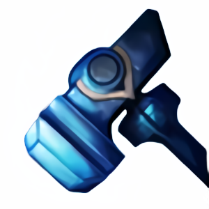
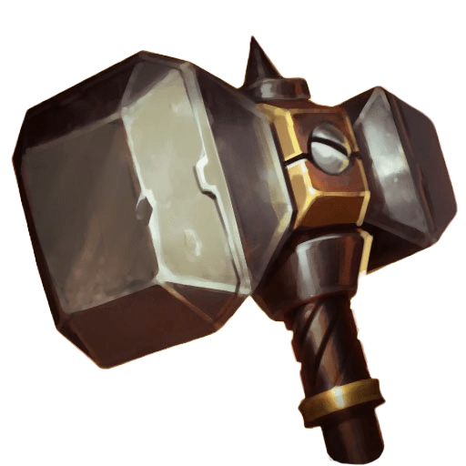

강화하기 보관하기: 검을 보관함에 보관한 뒤 0강부터 다시 시작합니다.강화하기: 검을 강화합니다. 실패 시 0강으로 초기화됩니다.
판매하기: 검을 판매하고 0강부터 다시 시작합니다.
검의 강화 횟수가 표시됩니다.
검 이름이 표시됩니다.
다음 단계 강화 성공 확률이 표시됩니다.
강화 시 필요한 비용이 표시됩니다.
판매 시 얻을 수 있는 금액이 표시됩니다.
검을 클릭해 발견된 검의 상세 정보를 확인할 수 있습니다.
발견되지 않은 검을 제외한 아이템을 눌러 상세 정보를 확인할 수 있습니다.
스탯 포인트는 새로운 검을 발견할 때마다 한개씩 지급됩니다.
